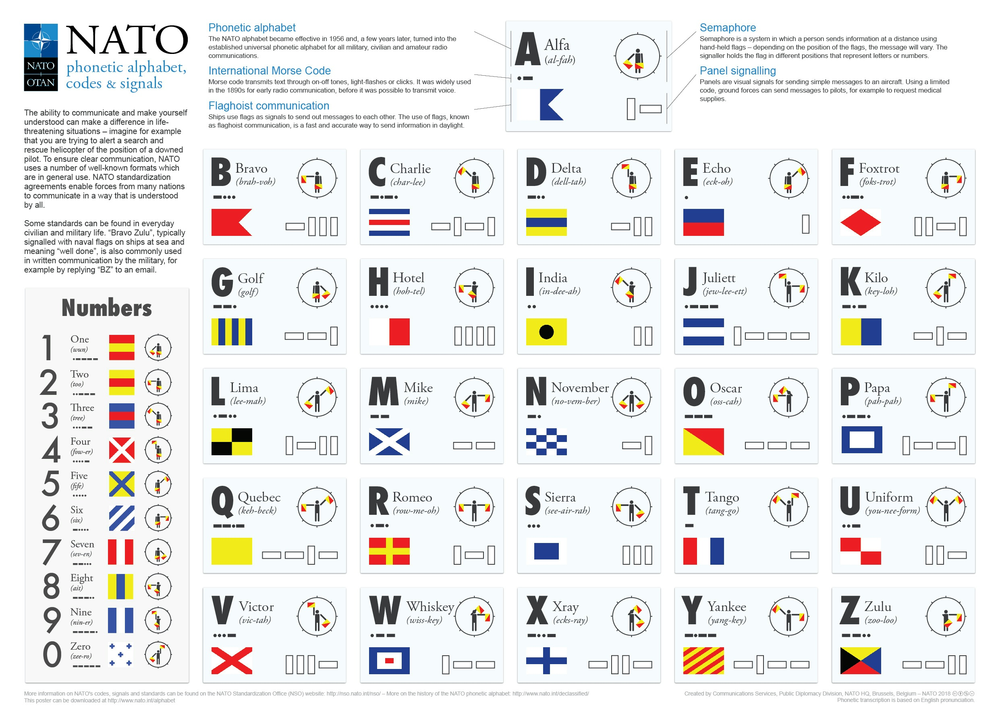

WELCOME TO BRAVO WEB
Introduction
In the U.S. Army, "Bravo" has several distinct meanings depending on the context, most commonly referring to the letter "B" in the phonetic alphabet, a specific company unit, an infantry job code, or a security threat level.
Phonetic Alphabet: The phonetic alphabet is a standardized set of words used to represent letters in oral communication, especially in military and aviation contexts. "Bravo" represents the letter "B" in this system.
Alfa, Bravo, Charlie, Delta, Echo, Foxtrot, Golf, Hotel, India, Juliett, Kilo, Lima, Mike, November, Oscar, Papa, Quebec, Romeo, Sierra, Tango, Uniform, Victor, Whiskey, X-ray, Yankee, Zulu
The Military Alphabet

<Different meanings of Bravo